Manual Transaxle Unit: Reassembly
- INSTALL OUTPUT SHAFT COVER
- Coat the output shaft cover with MP grease, and install it to the front transaxle case.
NOTE: Install the output shaft cover projection into the case hole.
- Coat the output shaft cover with MP grease, and install it to the front transaxle case.
- INSTALL OUTPUT SHAFT FRONT BEARING
- Coat a new front bearing with gear oil.
- Using SST and a press, press it into the front transaxle case.
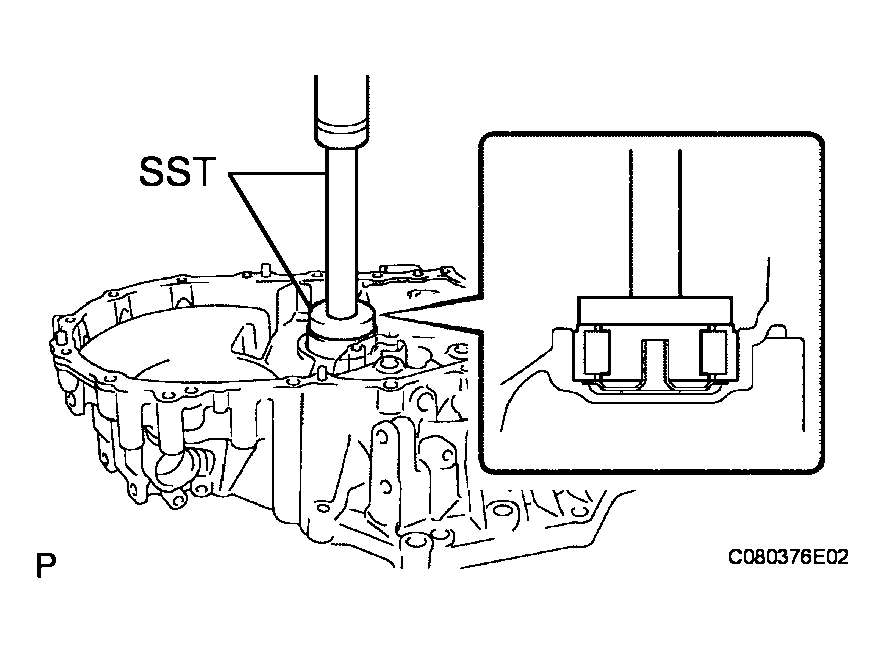
Courtesy of © TOYOTA, LICENSE AGREEMENT TMS1002SST 09950-60010 (09951-00550), 09950-70010 (09951-07150)
NOTE:- Be sure to install the bearing in the correct direction, as shown in the illustration.
- When replacing the output shaft front bearing, also replace the front bearing inner race.
- INSTALL FRONT TRANSAXLE CASE OIL SEAL
- Using SST and a hammer, press in a new front transaxle case oil seal to the front transaxle case.
SST 09950-60010 (09951-00370), 09950-70010 (09951-07150)
Standard depth: 15.6 to 16.0 mm (0.6141 to 0.6299 in.)
- Coat the lip of the front transaxle case oil seal with MP grease.
- Using SST and a hammer, press in a new front transaxle case oil seal to the front transaxle case.
- INSTALL INPUT SHAFT FRONT BEARING
- Coat a new input shaft front bearing with gear oil.
- Using SST and a press, press it into the front transaxle case.
SST 09950-60010 (09951-00420), 09950-70010 (09951-07150)
Standard depth: 0 to 0.3 mm (0 to 0.012 in.)
- INSTALL SHIFT AND SELECT LEVER SHAFT BIMETAL FORMED BUSH
- Using SST and a press, press in a new bush to the transmission case.
SST 09950-60010 (09951-00220), 09950-70010 (09951-07100)
Standard depth: 0 to 0.5 mm (0 to 0.020 in.)
- Using SST and a press, press in a new bush to the transmission case.
- INSTALL FRONT DIFFERENTIAL CASE FRONT TAPERED ROLLER BEARING
- Using SST and a press, press in the front tapered roller bearing (inner race) to the front differential case.
SST 09950-60020 (09951-00680), 09950-70010 (09951-07150)
- Using SST and a press, press in the front tapered roller bearing (outer race) with plate washer to the front transaxle case.
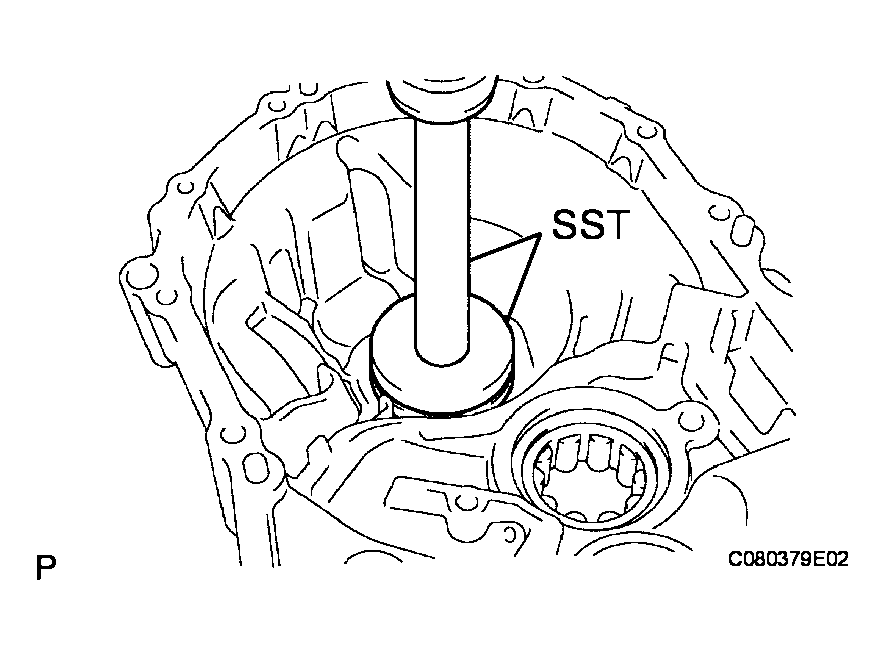
Courtesy of © TOYOTA, LICENSE AGREEMENT TMS1002SST 09350-32014 (09351-32120), 09950-60010 (09951-00530)
- Using SST and a press, press in the front tapered roller bearing (inner race) to the front differential case.
- INSTALL FRONT DIFFERENTIAL CASE REAR TAPERED ROLLER BEARING
- Using SST and a press, press in the rear tapered roller bearing (inner race) to the differential case.
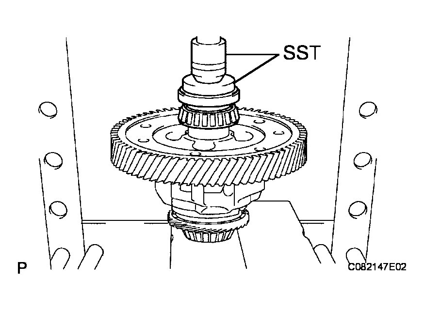
Courtesy of © TOYOTA, LICENSE AGREEMENT TMS1002SST 09350-32014 (09351-32120), 09950-60010 (09951-00530)
- Using SST and a press, press in the rear tapered roller bearing (outer race) with plate washer to the transmission case.
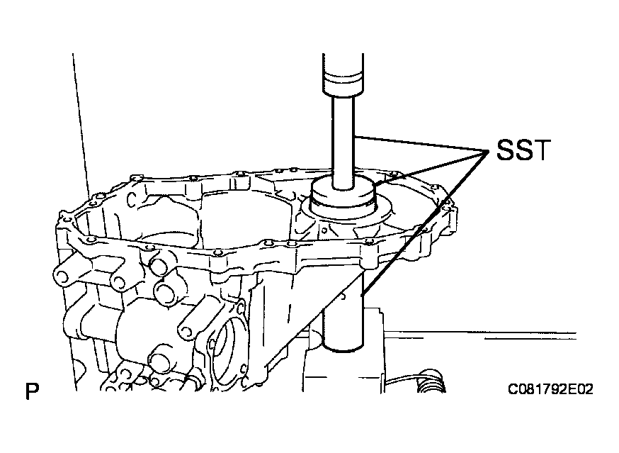
Courtesy of © TOYOTA, LICENSE AGREEMENT TMS1002SST 09309-36010, 09950-60020 (09951-00710), 09950-70010 (09951-07150)
HINT:
Use a plate washer with the same thickness as the removed one.
- Using SST and a press, press in the rear tapered roller bearing (inner race) to the differential case.
- ADJUST DIFFERENTIAL SIDE BEARING PRELOAD
- Coat the differential case with gear oil, and install it to the front transaxle case.
- Install the transmission case with the 16 bolts.
Torque: 29 N*m (300 kgf*cm, 22 ft.*lbf)
- Using SST and a torque wrench, turn the differential case to the right and left 2 or 3 times to allow the bearings to settle.
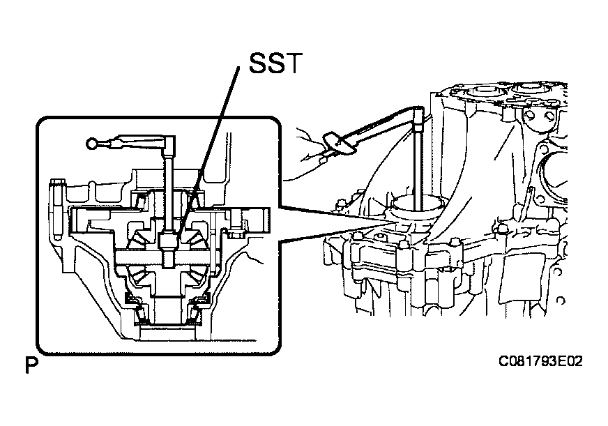
Courtesy of © TOYOTA, LICENSE AGREEMENT TMS1002SST 09564-32011
- Using SST and a torque wrench, measure the preload.
Standard preload (at starting)
TORQUE SPECIFICATIONItem Specified Condition New bearing 0.78 to 1.57 N*m (7.95 to 16.0 kgf*cm, 6.9 to 13.89 in.*lbf) Reused bearing 0.49 to 0.98 N*m (5.0 to 10.0 kgf*cm, 4.34 to 8.67 in.*lbf) If the preload is not within the specification, select another plate washer.
Standard plate washer thickness
WASHER THICKNESS SPECIFICATIONMark Thickness mm (in.) AA 2.10 (0.0827) BB 2.15 (0.0846) CC 2.20 (0.0866) DD 2.25 (0.0886) EE 2.30 (0.0906) FF 2.35 (0.0925) GG 2.40 (0.0945) HH 2.45 (0.0965) JJ 2.50 (0.0984) KK 2.55 (0.1004) LL 2.60 (0.1024) MM 2.65 (0.1043) NN 2.70 (0.1063) PP 2.75 (0.1083) QQ 2.80 (0.1102) RR 2.85 (0.1122) SS 2.90 (0.1142) TT 2.95 (0.1161) UU 3.00 (0.1181) HINT:
The preload will change by about 0.3 to 0.4 N*m (3 to 4 kgf*cm, 2.6 to 3.5 in.*lbf) corresponding to a change of 0.05 mm (0.0020 in.) in plate washer thickness.
- Remove the 16 bolts and transmission case.
- Remove the differential case from the front transaxle case.
- INSTALL TRANSMISSION CASE OIL SEAL
- Using SST and a hammer, tap in a new transmission case oil seal to the transmission case.
SST 09316-60011 (09316-00011)
Standard drive depth: 2.1 to 2.7 mm (0.083 to 0.106 in.)
- Coat the lip of the front transmission case oil seal with MP grease.
- Using SST and a hammer, tap in a new transmission case oil seal to the transmission case.
- INSTALL TRANSAXLE CASE OIL SEAL
- Using SST and a hammer, tap in a new oil seal to the front transaxle case.
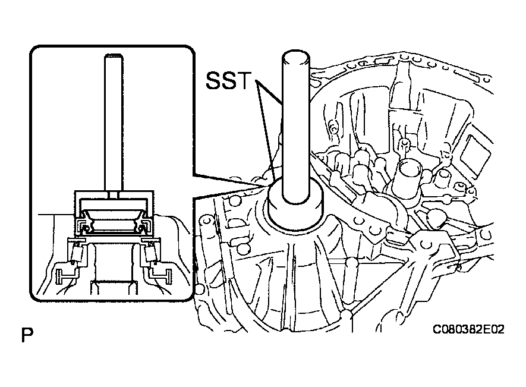
Courtesy of © TOYOTA, LICENSE AGREEMENT TMS1002SST 09710-20011 (09710-06071), 09950-70010 (09951-07150)
Standard depth: 1.6 to 2.2 mm (0.063 to 0.087 in.)
- Coat the lip of the oil seal with MP grease.
- Using SST and a hammer, tap in a new oil seal to the front transaxle case.
- INSTALL TRANSMISSION MAGNET
- Clean the transmission magnet, and install it to the front transaxle case.
- INSTALL BEARING LOCK PLATE
- Install the bearing lock plate to the front transaxle case with the bolt.
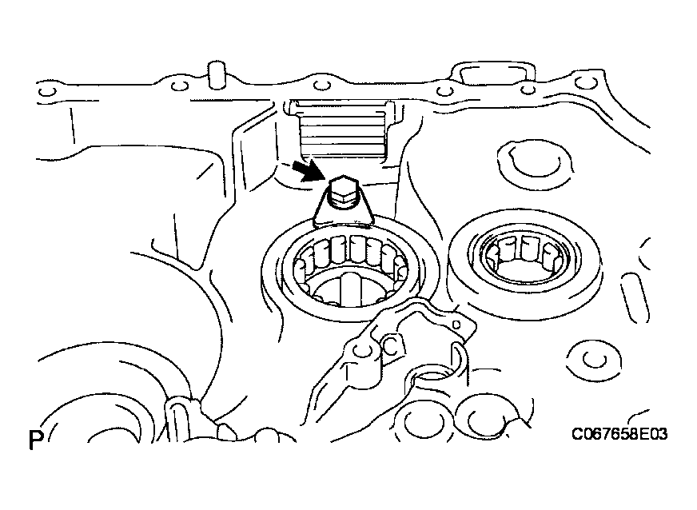
Courtesy of © TOYOTA, LICENSE AGREEMENT TMS1002Torque: 11 N*m (115 kgf*cm, 8.3 ft.*lbf)
- Install the bearing lock plate to the front transaxle case with the bolt.
- INSTALL NO. 1 OIL RECEIVER PIPE
- Install the No. 1 oil receiver pipe to the transmission case with the bolt.
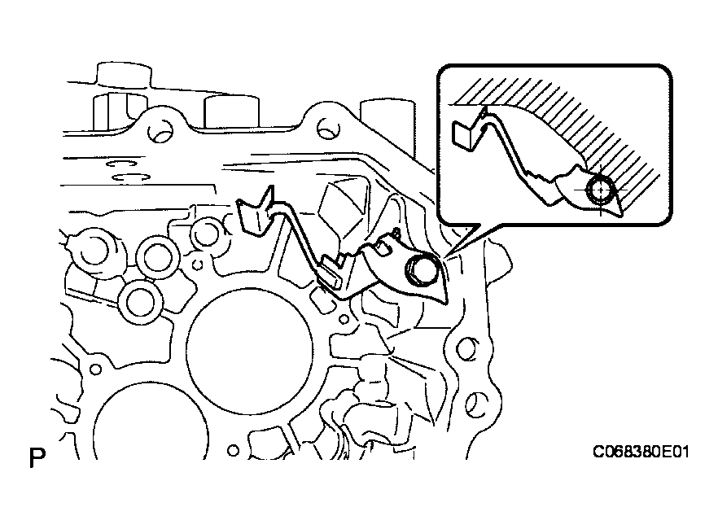
Courtesy of © TOYOTA, LICENSE AGREEMENT TMS1002Torque: 17 N*m (175 kgf*cm, 13 ft.*lbf)
NOTE:- Prevent the No. 1 oil receiver pipe from being deformed.
- Install the No. 1 oil receiver pipe while placing it against the transmission case, as shown in the illustration.
- Install the No. 1 oil receiver pipe to the transmission case with the bolt.
- INSTALL NO. 2 OIL RECEIVER PIPE
- Install the No. 2 oil receiver pipe to the transmission case with the bolt.
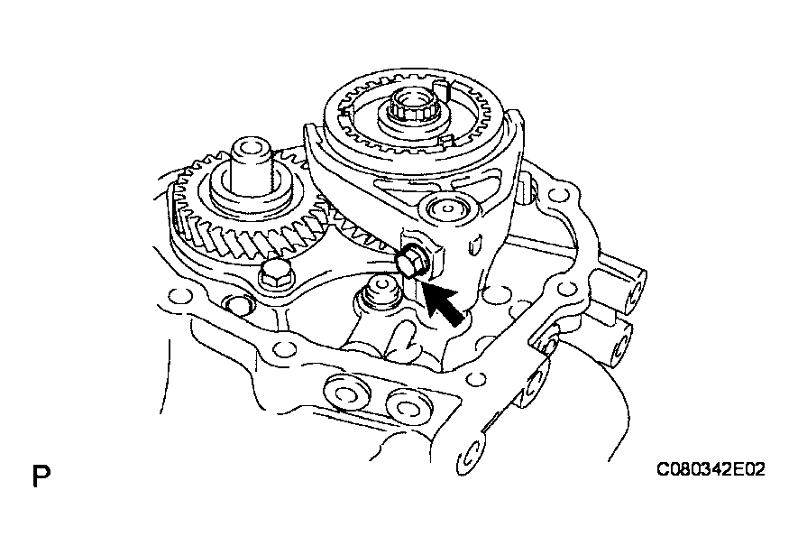
Courtesy of © TOYOTA, LICENSE AGREEMENT TMS1002Torque: 17 N*m (175 kgf*cm, 13 ft.*lbf)
NOTE:- Prevent the No. 2 oil receiver pipe from being deformed.
- Install the No. 2 oil receiver pipe while placing it against the transmission case, as shown in the illustration.
- Install the No. 2 oil receiver pipe to the transmission case with the bolt.
- INSTALL REVERSE RESTRICT PIN ASSEMBLY
- Install the reverse restrict pin to the manual transmission case.
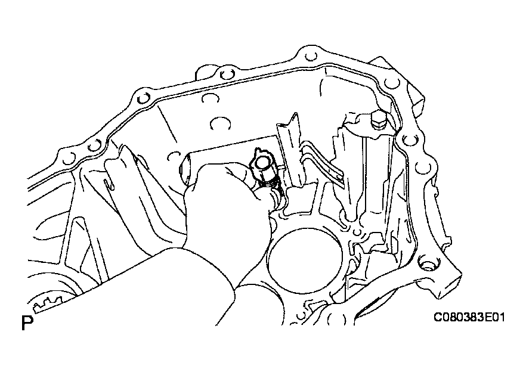
Courtesy of © TOYOTA, LICENSE AGREEMENT TMS1002NOTE: Be sure to set the reverse restrict pin in the correct orientation. - Using a 5 mm pin punch and hammer, tap in the slotted pin to the reverse restrict pin.
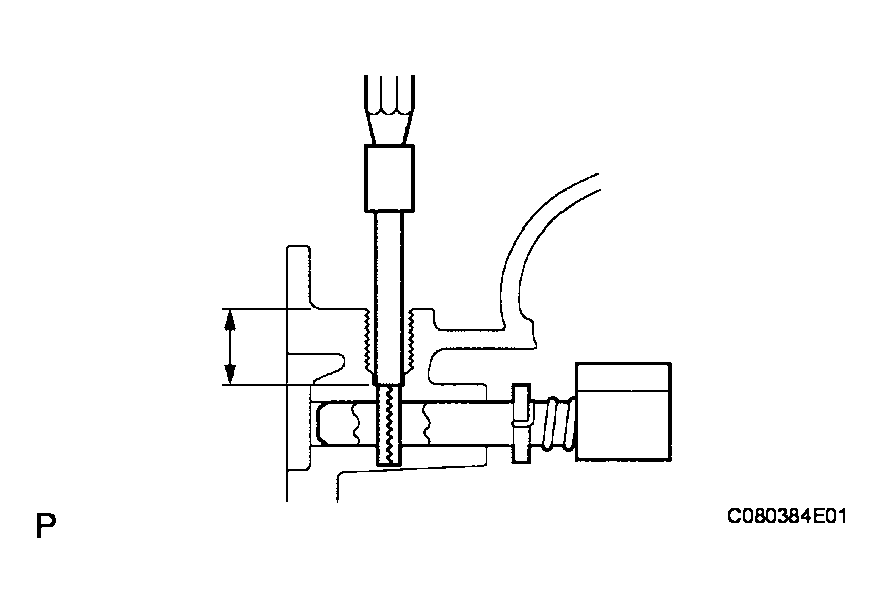
Courtesy of © TOYOTA, LICENSE AGREEMENT TMS1002Standard depth: 16.0 to 17.0 mm (0.6299 to 0.6693 in.)
- Apply sealant to the reverse restrict pin plug.
Sealant: Part No. 08833-00080, THREE BOND 1344, LOCTITE 242 or equivalent
- Using a hexagon wrench and torque wrench, install the reverse restrict pin plug to the transmission case.
Torque: 13 N*m (130 kgf*cm, 9 ft.*lbf)
- Install the reverse restrict pin to the manual transmission case.
- INSTALL MANUAL TRANSAXLE CASE RECEIVER
- Install the transaxle case receiver to the front transaxle case with the bolt.
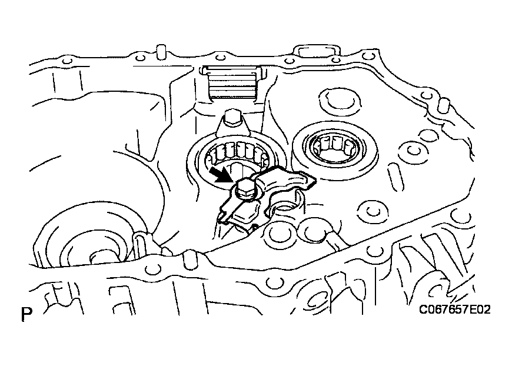
Courtesy of © TOYOTA, LICENSE AGREEMENT TMS1002Torque: 11 N*m (115 kgf*cm, 8 ft.*lbf)
- Install the transaxle case receiver to the front transaxle case with the bolt.
- INSTALL DIFFERENTIAL CASE ASSEMBLY
- Coat the differential case tapered roller bearing with gear oil, and install the differential case to the front transaxle case.
- INSTALL INPUT SHAFT ASSEMBLY
- Coat the sliding and rotating surface of the input and output shafts with gear oil, and install them to the transaxle case.
- INSTALL REVERSE IDLER GEAR SUB-ASSEMBLY
- Coat the reverse idler gear, thrust washer and reverse idler gear shaft with gear oil, and install them as shown in the illustration.
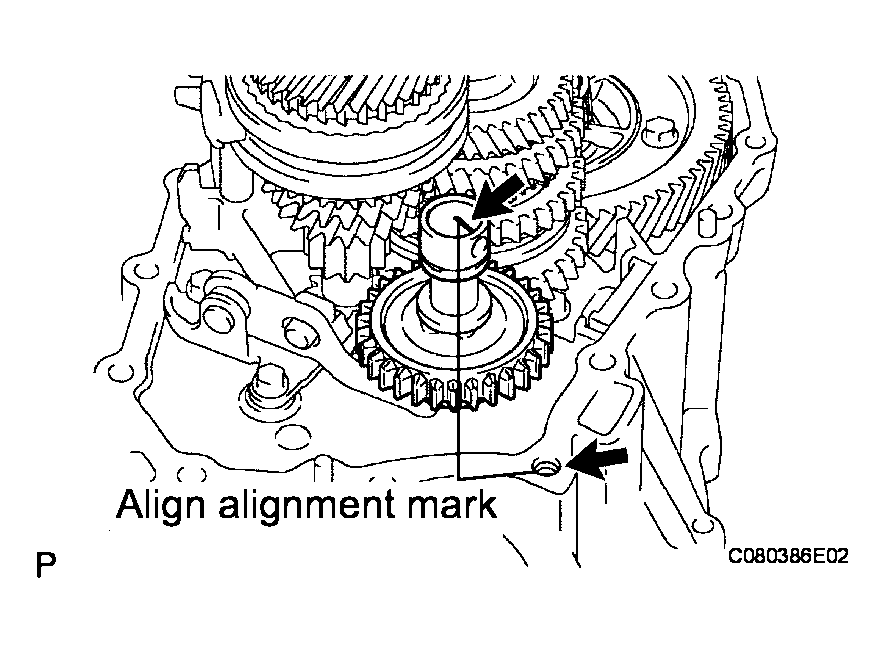
Courtesy of © TOYOTA, LICENSE AGREEMENT TMS1002HINT:
Align the mark on the reverse idler gear shaft with the bolt hole, as shown in the illustration.
- Coat the reverse idler gear, thrust washer and reverse idler gear shaft with gear oil, and install them as shown in the illustration.
- INSTALL NO. 1 GEAR SHIFT FORK SHAFT
- Coat the No. 1 gear shift fork and No. 2 gear shift fork with gear oil, and install them.
- Coat the No. 1 gear shift fork shaft with gear oil, and install it.
- Apply sealant to the shift fork set bolt.
Sealant: Part No. 08833-00080, THREE BOND 1344, LOCTITE 242 or equivalent
- Install the shift fork set bolt.
Torque: 16 N*m (160 kgf*cm, 12 ft.*lbf)
- Using a brass bar and hammer, tap in a new shaft snap ring to the No. 1 gear shift fork shaft.
- INSTALL NO. 3 GEAR SHIFT FORK SHAFT
- Coat the 2 shift fork balls with MP grease, and install them to the reverse shift fork.
- Install the reverse shift fork to the No. 3 gear shift fork shaft.
- Using a brass bar and hammer, tap in 2 new shift fork shaft snap rings to the No. 3 shift fork shaft.
- Coat the No. 3 gear shift fork shaft with gear oil, and install it.
- INSTALL NO. 2 GEAR SHIFT FORK SHAFT
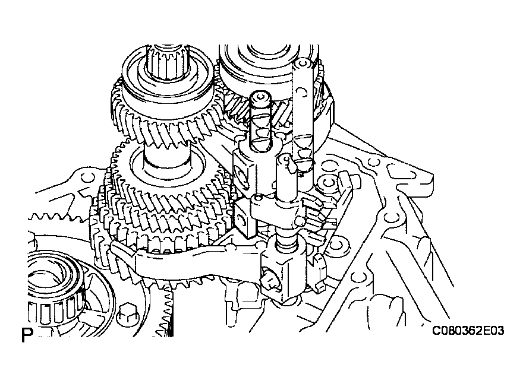
Courtesy of © TOYOTA, LICENSE AGREEMENT TMS1002- Coat the No. 1 gear shift head and No. 2 gear shift fork shaft with gear oil, and install them.NOTE: To avoid the interference of the 2 shift fork balls, lift up the No. 3 gear shift fork shaft to the position shown in the illustration.
- Coat the 2 shift lock bolts with sealant, and install them to the No. 2 gear shift fork and No. 1 shift head.
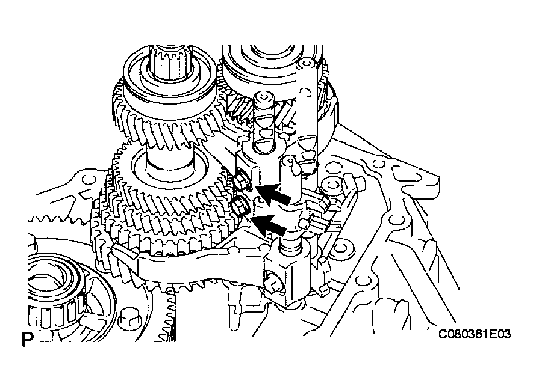
Courtesy of © TOYOTA, LICENSE AGREEMENT TMS1002Sealant: Part No. 08833-00080, THREE BOND 1344, LOCTITE 242 or equivalent
Torque: 16 N*m (160 kgf*cm, 12 ft.*lbf)
- Coat the No. 1 gear shift head and No. 2 gear shift fork shaft with gear oil, and install them.
- INSTALL REVERSE SHIFT ARM BRACKET ASSEMBLY
- Install the reverse shift arm bracket to the front transaxle case with 2 bolts.
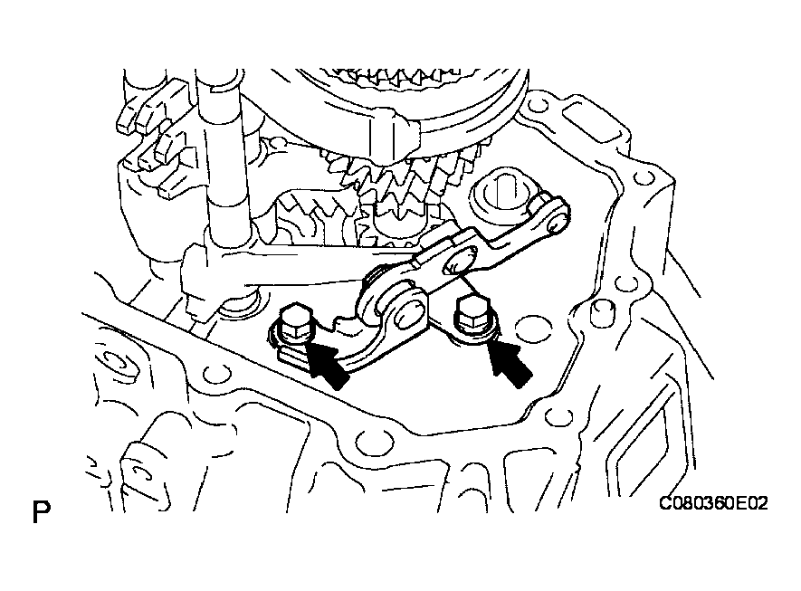
Courtesy of © TOYOTA, LICENSE AGREEMENT TMS1002Torque: 17 N*m (175 kgf*cm, 13 ft.*lbf)
- Install the reverse shift arm bracket to the front transaxle case with 2 bolts.
- INSTALL MANUAL TRANSMISSION CASE
- Apply FIPG to the transmission case, as shown in the illustration.
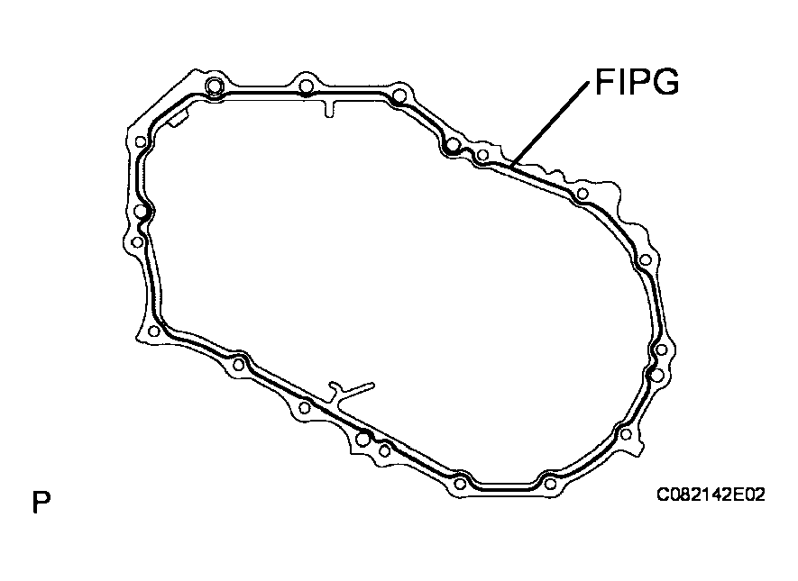
Courtesy of © TOYOTA, LICENSE AGREEMENT TMS1002FIPG: Part No. 08826-00090, THREE BOND 1281 or equivalent
NOTE: Parts must be assembled within 10 minutes of application. Otherwise, the packing (FIPG) material must be removed and reapplied. - Coat the 13 bolts with sealant, and install them to the transmission case.
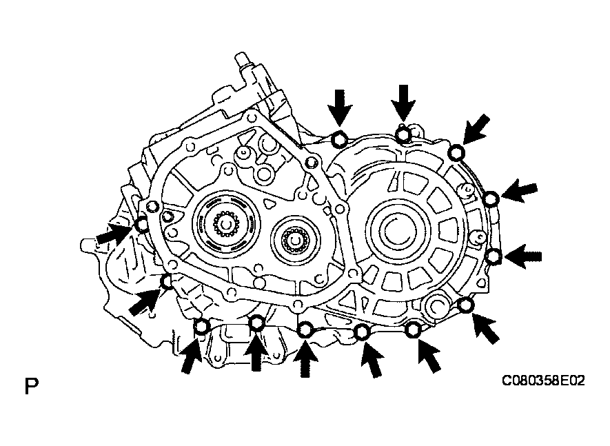
Courtesy of © TOYOTA, LICENSE AGREEMENT TMS1002Sealant: Part No. 08833-00080, THREE BOND 1344, LOCTITE 242 or equivalent
Torque: 29 N*m (300 kgf*cm, 22 ft.*lbf)
- Coat the 3 bolts with sealant, and install them to the front transaxle case.
Sealant: Part No. 08833-00080, THREE BOND 1344, LOCTITE 242 or equivalent
Torque: 29 N*m (300 kgf*cm, 22 ft.*lbf)
- Apply FIPG to the transmission case, as shown in the illustration.
- INSTALL REVERSE IDLER GEAR SHAFT BOLT
- Coat the reverse idler gear shaft bolt with sealant, and install it with a new gasket.
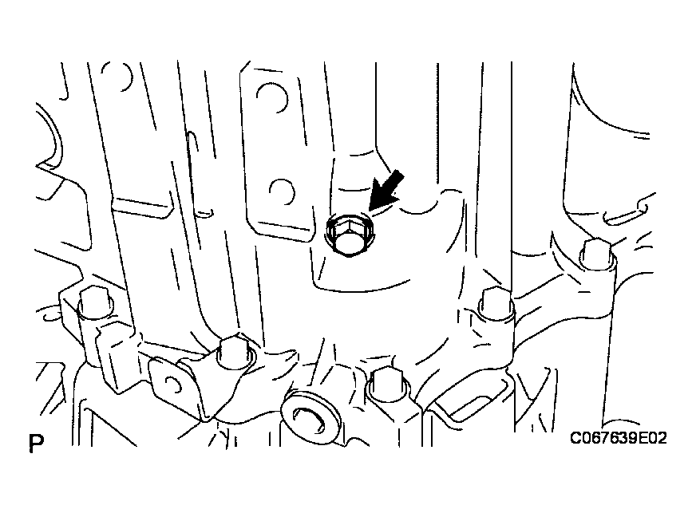
Courtesy of © TOYOTA, LICENSE AGREEMENT TMS1002Sealant: Part No. 08833-00080, THREE BOND 1344, LOCTITE 242 or equivalent
Torque: 29 N*m (300 kgf*cm, 22 ft.*lbf)
- Coat the reverse idler gear shaft bolt with sealant, and install it with a new gasket.
- INSTALL NO. 2 LOCK BALL ASSEMBLY
- Coat the No. 2 lock ball with sealant, and install it with a hexagon wrench.
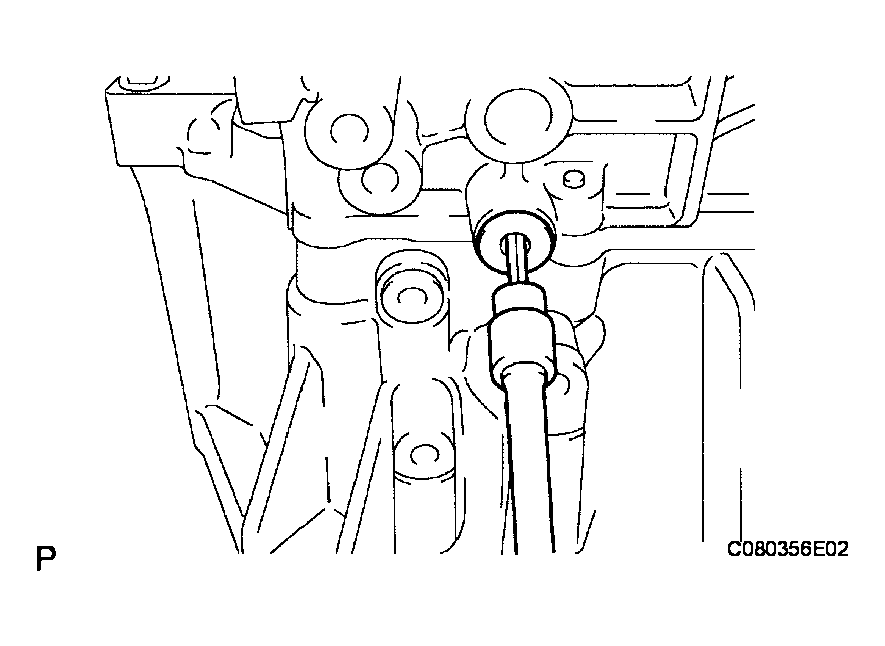
Courtesy of © TOYOTA, LICENSE AGREEMENT TMS1002Sealant: Part No. 08833-00080, THREE BOND 1344, LOCTITE 242 or equivalent
Torque: 29 N*m (300 kgf*cm, 22 ft.*lbf)
- Coat the No. 2 lock ball with sealant, and install it with a hexagon wrench.
- INSTALL SHIFT DETENT BALL
- Install the 2 shift detent balls, 2 shift detent ball springs with 2 No. 1 shift detent ball spring seats to the manual transmission case.
- Coat the 2 shift detent ball plugs with sealant, and install them with a hexagon wrench.
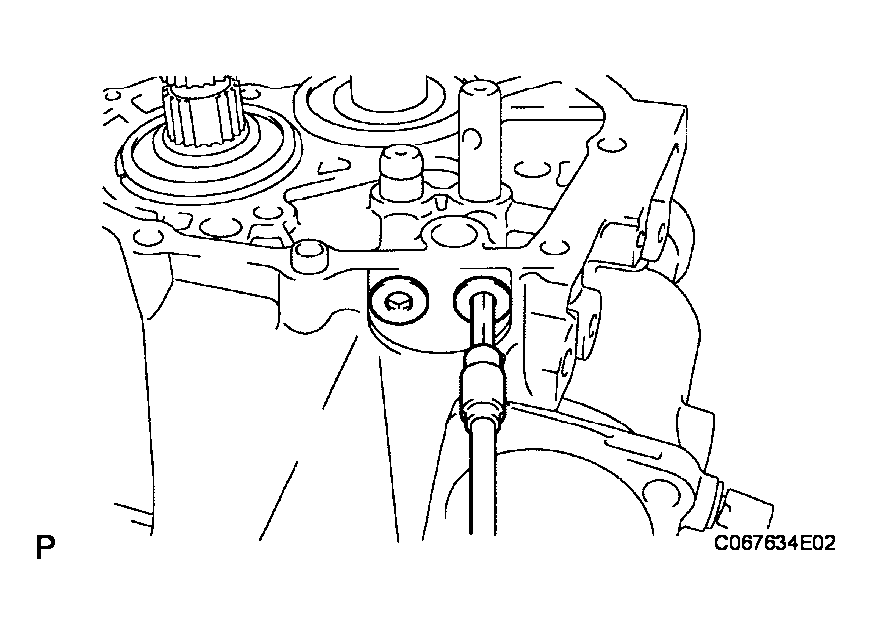
Courtesy of © TOYOTA, LICENSE AGREEMENT TMS1002Sealant: Part No. 08833-00080, THREE BOND 1344, LOCTITE 242 or equivalent
Torque: 22 N*m (224 kgf*cm, 16 ft.*lbf)
- Install the shift detent ball, shift detent ball compression spring and No. 1 shift detent ball spring seat to the front transaxle case.
- Coat the shift detent ball plug with sealant, and install it with a hexagon wrench.
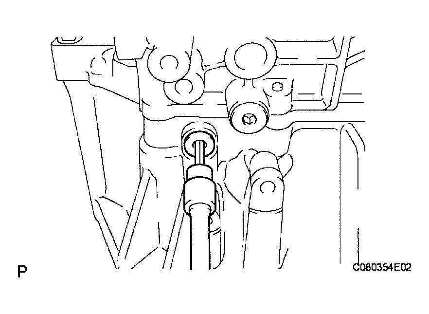
Courtesy of © TOYOTA, LICENSE AGREEMENT TMS1002Sealant: Part No. 08833-00080, THREE BOND 1344, LOCTITE 242 or equivalent
Torque: 22 N*m (224 kgf*cm, 16 ft.*lbf)
- INSTALL INPUT SHAFT REAR BEARING HOLE SNAP RING
- Using a snap ring expander, install a new hole snap ring to the input shaft.
- INSTALL OUTPUT SHAFT REAR BEARING HOLE SNAP RING
- Using a snap ring expander, install a new hole snap ring to the output shaft.
- INSTALL SHIFT FORK SHAFT SNAP RING
- Using a brass bar and hammer, tap in a new shift fork shaft snap ring to the No. 2 shift fork shaft.
- INSTALL REAR BEARING RETAINER
- Coat the 5 bolts with sealant, and install the rear bearing retainer to the transmission case with the 5 bolts.
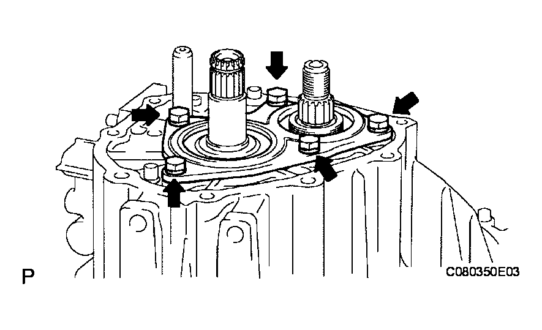
Courtesy of © TOYOTA, LICENSE AGREEMENT TMS1002Sealant: Part No. 08833-00080, THREE BOND 1344, LOCTITE 242 or equivalent
Torque: 27 N*m (280 kgf*cm, 20 ft.*lbf)
- Coat the 5 bolts with sealant, and install the rear bearing retainer to the transmission case with the 5 bolts.
- INSTALL 5TH DRIVEN GEAR
- Using SST, install the 5th driven gear to the output shaft.
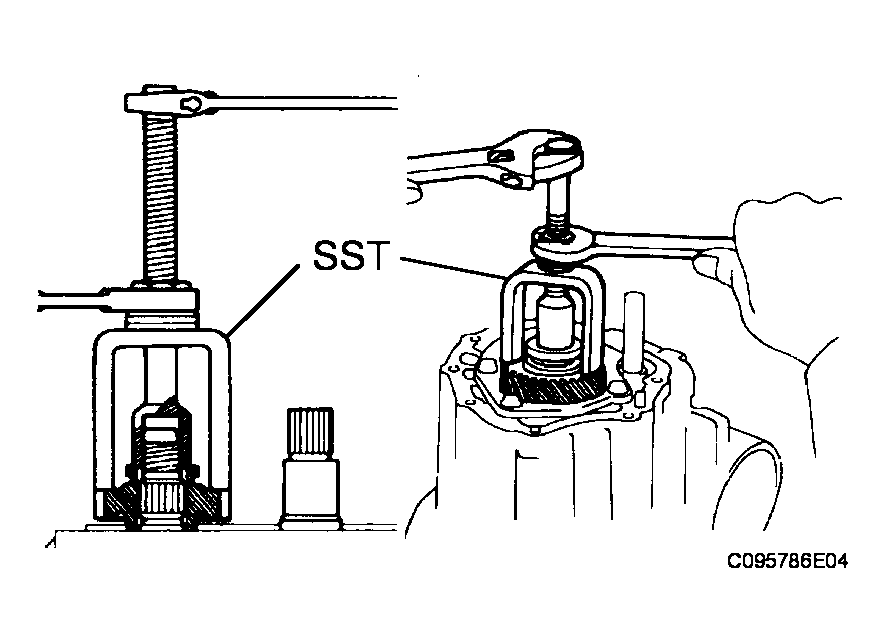
Courtesy of © TOYOTA, LICENSE AGREEMENT TMS1002SST 09309-12020
- Using SST, install the 5th driven gear to the output shaft.
- INSTALL 5TH GEAR NEEDLE ROLLER BEARING
- Coat the 5th gear needle roller bearing and 5th gear bearing spacer with gear oil, and install them to the input shaft.
- INSTALL 5TH GEAR
- Coat the 5th gear with gear oil, and install it to the input shaft.
- REMOVE NO. 3 SYNCHRONIZER RING
- Coat the No. 3 synchronizer ring with gear oil, and install it to the 5th gear.
- INSTALL NO. 3 TRANSMISSION CLUTCH HUB
- Install the 3 synchromesh shifting keys and 2 synchromesh shifting key springs to the No. 3 transmission clutch hub as shown in the illustration.
NOTE: Do not set both openings of the shifting key springs in the same position.
- Using SST and a hammer, tap in the No. 3 clutch hub to the input shaft.
SST 09636-20010
NOTE:- Do not install the No. 3 transmission clutch hub with it facing in the wrong direction.
- Install the No. 3 transmission clutch hub, checking the positions of the No. 3 synchronizer ring key groove and the No. 3 synchromesh shifting key.
- Check that the 5th gear is rotating.
- Place a suitable sized wooden block to support the input shaft.
- Select a No. 3 clutch hub shaft snap ring that will allow minimum axial play.
Standard clearance: 0.1 mm (0.004 in.) or less
Standard snap ring thickness
SNAP RING THICKNESS SPECIFICATIONMark Thickness mm (in.) A 2.25 (0.0886) B 2.31 (0.0909) C 2.37 (0.0933) D 2.43 (0.0957) E 2.49 (0.0980) F 2.55 (0.1004) G 2.61 (0.1028) - Using a brass bar and hammer, tap the snap ring onto the input shaft.
- Install the 3 synchromesh shifting keys and 2 synchromesh shifting key springs to the No. 3 transmission clutch hub as shown in the illustration.
- INSPECT 5TH GEAR THRUST CLEARANCE
- Using a dial indicator, measure the thrust clearance.Courtesy of © TOYOTA, LICENSE AGREEMENT TMS1002
Standard clearance: 0.1 to 0.57 mm (0.0039 to 0.0224 in.)
Maximum clearance: 0.57 mm (0.0224 in.)
If the clearance is greater than the maximum, replace the gear, needle roller bearing or shaft.
- Using a dial indicator, measure the thrust clearance.
- INSPECT 5TH GEAR RADIAL CLEARANCE
- Using a dial indicator, measure the radial clearance.Courtesy of © TOYOTA, LICENSE AGREEMENT TMS1002
Standard clearance
GEAR RADIAL CLEARANCE REFERENCEItem Specified Condition KOYO made 0.015 to 0.058 mm (0.0006 to 0.0023 in.) NSK made 0.015 to 0.056 mm (0.0006 to 0.0022 in.) Maximum clearance
GEAR RADIAL CLEARANCE REFERENCEItem Specified Condition KOYO made 0.058 mm (0.0023 in.) NSK made 0.056 mm (0.0022 in.) If the clearance is greater than the maximum, replace the gear, needle roller bearing or shaft.
- Using a dial indicator, measure the radial clearance.
- INSTALL NO. 3 GEAR SHIFT FORK
- Coat the No. 3 transmission clutch hub sleeve with gear oil, and install it and the No. 3 gear shift fork to the No. 3 transmission clutch hub.
HINT:
Be sure to set the No. 3 transmission clutch hub in the correct orientation.
- Coat the gear shift fork lock bolt with sealant, and install it to the No. 3 gear shift fork.Courtesy of © TOYOTA, LICENSE AGREEMENT TMS1002
Sealant: Part No. 08833-00080, THREE BOND 1344, LOCTITE 242 or equivalent
Torque: 16 N*m (160 kgf*cm, 12 ft.*lbf)
- Coat the No. 3 transmission clutch hub sleeve with gear oil, and install it and the No. 3 gear shift fork to the No. 3 transmission clutch hub.
- INSTALL MANUAL TRANSMISSION OUTPUT SHAFT REAR SET NUT
- Engage the 2 gears simultaneously to lock the transmission.
- Install a new set nut.
Torque: 118 N*m (1200 kgf*cm, 87 ft.*lbf)
- Using a chisel and hammer, stake the set nut.
- Disengage the 2 gears.
- INSTALL MANUAL TRANSMISSION CASE COVER SUB-ASSEMBLY
- Apply FIPG to the transaxle case cover as shown in the illustration.
FIPG: Part No. 08826-00090, THREE BOND 1281
NOTE: Parts must be assembled within 10 minutes of application. Otherwise, the packing (FIPG) material must be removed and reapplied. - Install the transmission case cover to the transmission case with the 9 bolts.Courtesy of © TOYOTA, LICENSE AGREEMENT TMS1002
Torque: 18 N*m (185 kgf*cm, 14 ft.*lbf)
- Apply FIPG to the transaxle case cover as shown in the illustration.
- INSTALL SHIFT AND SELECT LEVER SHAFT ASSEMBLY
- Coat the 4 bolts with sealant and install a new gasket and lever shaft to the transmission case with the 4 bolts.Courtesy of © TOYOTA, LICENSE AGREEMENT TMS1002
Sealant: Part No. 08833-00080, THREE BOND 1344, LOCTITE 242 or equivalent
Torque: 20 N*m (200 kgf*cm, 14 ft.*lbf)
NOTE: Set the claws of the shift interlock plate into the shift head part of the gear shift fork shaft securely.
- Coat the 4 bolts with sealant and install a new gasket and lever shaft to the transmission case with the 4 bolts.
- INSTALL NO. 1 LOCK BALL ASSEMBLY
- Coat the No. 1 lock ball with sealant, and install it to the transmission case.
Sealant: Part No. 08833-00080, THREE BOND 1344, LOCTITE 242 or equivalent
Torque: 29 N*m (300 kgf*cm, 22 ft.*lbf)
- Coat the No. 1 lock ball with sealant, and install it to the transmission case.
- INSTALL SELECTING BELLCRANK ASSEMBLY
- Install the selecting bellcrank with control shift lever bush to the transmission case with the 2 bolts.Fig 65: Installing Selecting Bellcrank With Control Shift Lever Bush To Transmission Case With BoltsCourtesy of © TOYOTA, LICENSE AGREEMENT TMS1002
Torque: 25 N*m (250 kgf*cm, 18 ft.*lbf)
NOTE: Apply MP grease to the inside circumferential surface of the control shift lever bush (A).
- Install the selecting bellcrank with control shift lever bush to the transmission case with the 2 bolts.
- INSTALL FLOOR SHIFT CONTROL LEVER HOUSING SUPPORT BRACKET
- INSTALL BACK-UP LIGHT SWITCH ASSEMBLY
- Using SST, install the back-up light switch to the transmission case with a new gasket.Courtesy of © TOYOTA, LICENSE AGREEMENT TMS1002
SST 09817-16011
Torque: 40 N*m (410 kgf*cm, 30 ft.*lbf)
- Using SST, install the back-up light switch to the transmission case with a new gasket.
- INSTALL RELEASE FORK SUPPORT
- Install the release fork support to the front transaxle case.Courtesy of © TOYOTA, LICENSE AGREEMENT TMS1002
Torque: 37 N*m (375 kgf*cm, 25 ft.*lbf)
- Install the release fork support to the front transaxle case.
- INSTALL CLUTCH RELEASE FORK BOOT
- Install the clutch release fork boot to the front transaxle case.
- INSTALL CLUTCH RELEASE BEARING ASSEMBLY
- Coat the clutch release bearing with release hub grease, and install it to the clutch release fork with the clutch release fork bearing hub clip.
Release hub grease: Part No. 08887-01806, RELEASE HUB GREASE or equivalent
- Coat the clutch release bearing with release hub grease, and install it to the clutch release fork with the clutch release fork bearing hub clip.
- INSTALL CLUTCH RELEASE FORK SUB-ASSEMBLY
- Install the clutch release fork to the input shaft.
- Apply clutch spline grease to the spline of the input shaft.Courtesy of © TOYOTA, LICENSE AGREEMENT TMS1002
Clutch spline grease: Part No. 08887-01806, CLUTCH SPLINE GREASE or equivalent
- INSTALL SPEEDOMETER DRIVEN HOLE COVER SUB-ASSEMBLY
- Install a new O-ring to the driven hole cover.
- Install the driven hole cover to the transaxle case with the bolt.
Torque: 11 N*m (115 kgf*cm, 8 ft.*lbf)
- INSTALL CLUTCH RELEASE CYLINDER ASSEMBLY
- Install the clutch release cylinder to the transmission case with the 2 bolts.Courtesy of © TOYOTA, LICENSE AGREEMENT TMS1002
Torque: 12 N*m (120 kgf*cm, 9 ft.*lbf)
- Install the clutch release cylinder to the transmission case with the 2 bolts.
- INSTALL MANUAL TRANSMISSION FILLER PLUG
- Install the transmission filler plug to the transmission case with a new gasket.Courtesy of © TOYOTA, LICENSE AGREEMENT TMS1002
Torque: 39 N*m (400 kgf*cm, 29 ft.*lbf)
- Install the transmission filler plug to the transmission case with a new gasket.
- INSTALL DRAIN PLUG SUB-ASSEMBLY
- Install the drain plug to the transmission case with a new gasket.Courtesy of © TOYOTA, LICENSE AGREEMENT TMS1002
Torque: 39 N*m (400 kgf*cm, 29 ft.*lbf)
- Install the drain plug to the transmission case with a new gasket.